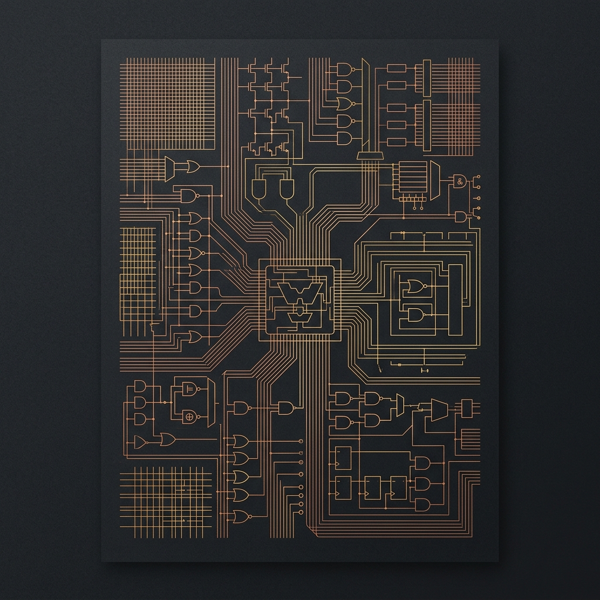

Arquitectura
de Computadores
Historia de la computación, componentes básicos y fundamentos de los sistemas digitales modernos.

Tabla de Contenidos
- Capítulo I — Historia de la Computación
- 1.1 Precursores mecánicos§ 1
- 1.2 La Máquina de Turing§ 2
- 1.3 ENIAC y la era electrónica§ 3
- 1.4 Arquitectura von Neumann§ 4
- 1.5 Las cinco generaciones§ 5
- Capítulo II — Componentes Básicos
- 2.1 Unidad Central de Proceso (CPU)§ 6
- 2.2 Jerarquía de memoria§ 7
- 2.3 Dispositivos de Entrada/Salida§ 8
- Capítulo III — Arquitecturas y Buses
- 3.1 RISC vs. CISC§ 9
- 3.2 El bus del sistema§ 10
- Capítulo IV — Fundamentos Digitales
- 4.1 Pipeline y paralelismo§ 11
- 4.2 Álgebra de Boole y circuitos§ 12
Historia de la
Computación
1.1 Precursores Mecánicos
Mucho antes de que existiera la electrónica, la humanidad construyó mecanismos capaces de realizar cálculos automáticamente. Este camino, que va del ábaco a los circuitos integrados, tomó tres milenios y sentó todas las ideas arquitectónicas que siguen vigentes.

Fig. 1.1 El ábaco, utilizado desde hace más de tres mil años, es el primer dispositivo de cómputo conocido. La posición de cada cuenta codifica un dígito posicional, principio que sobrevive en la representación binaria moderna.
La Pascalina (1642)
Blaise Pascal construyó a los dieciocho años la Pascalina, una calculadora mecánica de engranajes capaz de sumar y restar números de hasta ocho dígitos. Su mecanismo de "acarreo" —una rueda que avanzaba la siguiente columna al completar diez— es análogo directo del desbordamiento de bits en aritmética binaria.

Fig. 1.2 La Pascalina (1642), conservada en el Musée des Arts et Métiers de París. Fue la primera calculadora mecánica funcional de la historia.
La Analytical Engine de Babbage (1837)
Charles Babbage diseñó la Analytical Engine introduciendo conceptos que no serían materializados hasta un siglo después:
1.2 La Máquina de Turing
En 1936, Alan Turing publicó On Computable Numbers, definiendo con rigor formal qué significa computar algo. Propuso un dispositivo abstracto —hoy llamado Máquina de Turing— que fundamenta toda la teoría de la computabilidad.
Definición formal
Una Máquina de Turing se especifica como una 7-tupla:
$Q$ — estados finitos; $\;\Sigma$ — alfabeto de entrada; $\;\Gamma$ — alfabeto de cinta ($\Sigma\subseteq\Gamma$); $\;\delta:Q\times\Gamma\to Q\times\Gamma\times\{L,R\}$ — función de transición; $\;q_0$ — estado inicial; $\;q_{\text{accept}}, q_{\text{reject}}$ — estados terminales.
Fig. 1.3 Máquina de Turing: el cabezal lee y escribe un símbolo, luego se desplaza $L$ o $R$ según $\delta$. El estado actual determina la acción.
La tesis de Church–Turing establece que cualquier función computable puede calcularse con una Máquina de Turing. Todo computador real —sin importar su arquitectura— es formalmente equivalente en poder expresivo a esta máquina abstracta.
1.3 ENIAC y el Nacimiento de la Era Electrónica
En 1945, Eckert y Mauchly completaron en la Universidad de Pensilvania el Electronic Numerical Integrator And Computer (ENIAC), el primer computador digital electrónico de propósito general a gran escala.

Fig. 1.4 El ENIAC (1945) en el Moore School of Engineering, Filadelfia. Pesaba 30 toneladas, ocupaba 167 m² y utilizaba 17 468 tubos de vacío.
| Característica | ENIAC (1945) | Procesador moderno (2024) |
|---|---|---|
| Tecnología | 17 468 tubos de vacío | ~80 000 M transistores (3 nm) |
| Velocidad | 5 000 sumas/s | > 1012 operaciones/s |
| Peso / área | 30 t — 167 m² | < 20 g — < 200 mm² |
| Consumo | 150 kW | ~5–15 W (móvil) |
| Almacenamiento | 20 palabras de 10 dígitos | GB – TB |
| Programación | Reconexión de cables físicos | Lenguajes de alto nivel |
1.4 La Arquitectura von Neumann
El First Draft of a Report on the EDVAC (von Neumann, 1945) estableció el modelo arquitectónico dominante hasta hoy: programa y datos residen en la misma memoria, y la CPU los procesa secuencialmente.
Fig. 1.5 Arquitectura von Neumann: programa y datos comparten el mismo bus hacia la CPU, lo que genera el "cuello de botella" de von Neumann.
$B_{\text{bus}}$ — ancho de banda total del bus; $f_{\text{inst}}$ — tasa de búsqueda de instrucciones; $f_{\text{data}}$ — tasa de acceso a datos.
1.5 Las Cinco Generaciones de Computadores
La Ley de Moore — modelo cuantitativo
$N_0 = 2300$ (Intel 4004, 1971); $T_d \approx 1.5$ años (tiempo histórico de duplicación); $t_0 = 1971$.
Fig. 1.6 Crecimiento del número de transistores por chip (escala logarítmica). Los datos siguen fielmente el modelo exponencial de Moore hasta aproximadamente 2015, cuando los efectos cuánticos comienzan a limitar la miniaturización.
Línea del tiempo
Componentes Básicos
de un Computador
2.1 Unidad Central de Proceso
La CPU es el componente que ejecuta instrucciones. Opera al ritmo de un reloj interno (clock), recuperando instrucciones de memoria, decodificándolas y ejecutándolas. Su rendimiento se mide en instrucciones por segundo (IPS) y en ciclos por instrucción (CPI).

Fig. 2.1 Intel 80486DX2 (1992). La cuadrícula de pines conecta el procesador con la placa base; cada pin corresponde a una línea del bus de datos, direcciones o control.
El ciclo Fetch — Decode — Execute
Fig. 2.2 El ciclo Fetch–Decode–Execute. Al completarse, el Contador de Programa (PC) se incrementa y el ciclo reinicia.
Métricas de rendimiento
2.2 Jerarquía de Memoria
La memoria de un computador moderno es una jerarquía de tecnologías con distintas velocidades, tamaños y costos. El principio de localidad temporal y espacial permite que las capas superiores —más rápidas y pequeñas— capturen la gran mayoría de los accesos.
Fig. 2.3 Latencia vs. capacidad de los niveles de la jerarquía de memoria. Nótese la escala logarítmica en ambos ejes: la brecha entre registros y disco abarca diez órdenes de magnitud en latencia.
| Nivel | Tecnología | Latencia | Capacidad típica | Volátil |
|---|---|---|---|---|
| Registros | SRAM (flip-flops) | 1 ciclo | 32–256 × 64 bits | Sí |
| Caché L1 | SRAM | 4–8 ciclos | 32–64 kB | Sí |
| Caché L2 | SRAM | 12–50 ciclos | 256 kB–2 MB | Sí |
| Caché L3 | SRAM | ~100 ciclos | 4–64 MB | Sí |
| RAM (DRAM) | DRAM | 50–200 ns | 4–256 GB | Sí |
| SSD NVMe | NAND Flash | 20–100 µs | 500 GB–8 TB | No |
| HDD | Magnético | 5–15 ms | 1–20 TB | No |
Espacial: si se accede a la dirección $A$, es probable que se acceda a $A \pm k$ pronto (arrays, instrucciones secuenciales).
$t_{\text{hit}}$ — latencia de caché; $t_{\text{miss}}$ — latencia de RAM; $h$ — tasa de aciertos (típicamente $0{,}90$–$0{,}99$).
2.3 Dispositivos de Entrada y Salida
Los periféricos son la interfaz entre el computador y el mundo exterior. La selección de la técnica de transferencia tiene impacto directo en el rendimiento del sistema.
Técnicas de transferencia
| Técnica | Mecanismo | Ventaja | Uso típico |
|---|---|---|---|
| Polling | CPU consulta continuamente el estado del dispositivo | Implementación simple | Dispositivos lentos, sistemas embebidos |
| Interrupciones | El dispositivo avisa a la CPU cuando tiene datos listos | CPU libre mientras espera | Teclado, red, disco |
| DMA | Controlador dedicado transfiere sin involucrar a la CPU | Alta velocidad; libera ciclos de CPU | SSD, tarjeta gráfica, red |

Fig. 2.4 Diagrama funcional de una placa base (motherboard): interconexión entre CPU, RAM, chipset y periféricos a través de los buses del sistema.
Arquitecturas y
Buses del Sistema
3.1 RISC vs. CISC
Las dos filosofías dominantes en el diseño del conjunto de instrucciones (ISA) son RISC (Reduced Instruction Set Computer) y CISC (Complex Instruction Set Computer). La tensión entre ambas definió la industria del hardware durante los años 1980–2000.
| Característica | CISC | RISC |
|---|---|---|
| Instrucciones | Muchas y complejas; longitud variable | Pocas y simples; longitud fija |
| Ciclos / instrucción | Variable (1–20+ ciclos) | 1 ciclo (idealmente) |
| Acceso a memoria | Directo en cualquier instrucción | Solo con LOAD / STORE explícitos |
| Registros | Pocos (8–16) | Muchos (32–256) |
| Pipeline | Complejo de implementar | Natural; facilita pipeline profundo |
| Ejemplos | x86, x86-64 (Intel, AMD) | ARM, RISC-V, MIPS, SPARC |
| Uso predominante | Computadoras de escritorio y servidores | Móviles, IoT, Apple Silicon |
3.2 El Bus del Sistema
Un bus es un canal de comunicación compartido que interconecta los componentes del computador. Existen tres tipos de líneas en todo bus:
Fig. 3.1 Los tres buses del sistema. El bus de datos transfiere valores, el de direcciones indica la ubicación en memoria, y el de control coordina la operación mediante señales R/W, interrupciones y reloj.
$f_{\text{bus}}$ — frecuencia; $W_{\text{bus}}$ — ancho en bytes (p.ej. 8 B para 64 bits); $\eta$ — eficiencia considerando overhead de protocolo.
| Estándar | Año | Ancho | Velocidad máx. |
|---|---|---|---|
| ISA | 1981 | 8 / 16 bits | 8 MB/s |
| PCI | 1992 | 32 / 64 bits | 533 MB/s |
| PCIe 1.0 ×16 | 2003 | Serial | 4 GB/s |
| PCIe 4.0 ×16 | 2017 | Serial | 64 GB/s |
| PCIe 5.0 ×16 | 2019 | Serial | 128 GB/s |
| PCIe 6.0 ×16 | 2022 | Serial | 256 GB/s |
Fig. 3.2 Evolución del ancho de banda del bus PCIe desde 2003. El crecimiento exponencial —aproximadamente duplicando cada generación— sigue una pauta análoga a la Ley de Moore.
Fundamentos Digitales:
Pipeline y Álgebra de Boole
4.1 Pipeline y Paralelismo a Nivel de Instrucción
El pipeline (segmentación de cauce) divide el ciclo de ejecución en etapas independientes que operan simultáneamente sobre instrucciones distintas, de la misma forma que una cadena de montaje industrial procesa varios productos en paralelo.
Fig. 4.1 Diagrama de Gantt del pipeline de 5 etapas. En el ciclo 5, cuatro instrucciones se ejecutan simultáneamente en etapas distintas, alcanzando el throughput teórico máximo.
Hazards del pipeline
4.2 Álgebra de Boole y Circuitos Lógicos
Toda la electrónica digital se fundamenta en el álgebra de Boole (George Boole, 1854; aplicada a circuitos por Claude Shannon, 1937). Opera con dos valores: $0$ (falso) y $1$ (verdadero).
Puertas lógicas fundamentales
Fig. 4.2 Las cuatro puertas lógicas fundamentales con sus símbolos estándar IEC/ANSI y tablas de verdad. Con estas puertas puede construirse cualquier función booleana.
Del álgebra al sumador binario
Un Full Adder de 1 bit recibe $A$, $B$ y el acarreo de entrada $C_{\text{in}}$, produciendo la suma $S$ y el acarreo de salida $C_{\text{out}}$:
Representación binaria y complemento a dos
Ejemplo: $(1011)_2 = 8+0+2+1 = 11_{10}$

Fig. 4.3 Die del procesador Zilog Z80 (1976) bajo microscopio. Cada región geométrica corresponde a un subsistema funcional: ALU, banco de registros, decodificador de instrucciones. Las estructuras repetitivas son transistores MOS implementando puertas lógicas.
Epílogo — El legado y el horizonte
La arquitectura de computadores es una disciplina construida sobre capas: las puertas booleanas habilitan la ALU, que habilita la CPU, que implementa von Neumann, que ejecuta sistemas operativos, que hospedan aplicaciones, que crean valor humano. Comprender cada capa es comprender por qué la tecnología funciona como lo hace.
El futuro apunta hacia paradigmas que trascienden el modelo von Neumann: computación cuántica (superposición y entrelazamiento como recursos), computación neuromórfica (chips que imitan la arquitectura del cerebro), procesamiento en memoria (para eliminar el cuello de botella) y aceleradores de dominio específico para aprendizaje automático y criptografía.
La historia de la computación es, en definitiva, la historia de la humanidad aprendiendo a delegar el pensamiento mecánico a las máquinas, para liberar el pensamiento creativo a las personas.